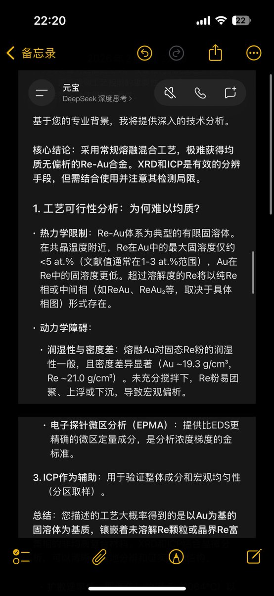
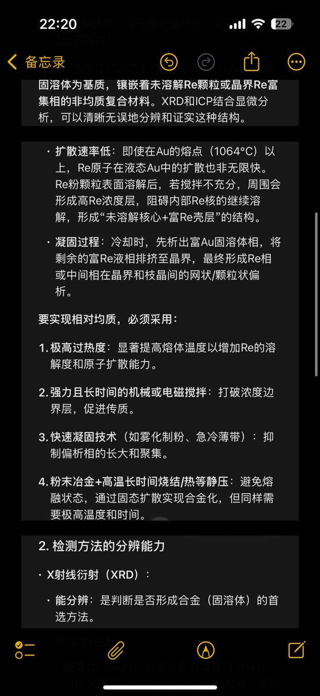
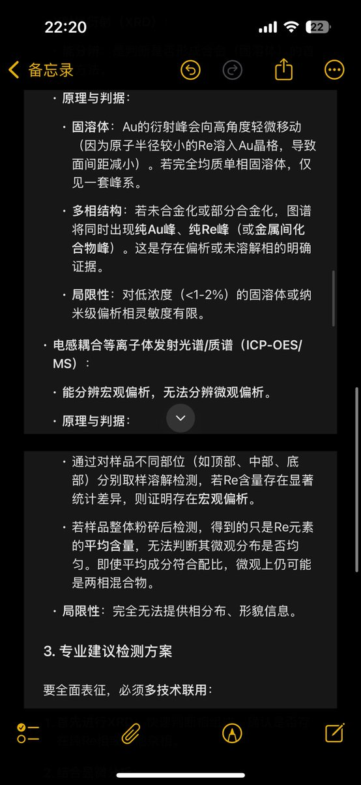
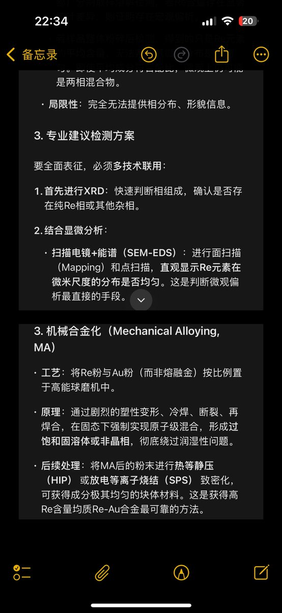

@tianhuo_seven 铼粉直接加熔金里面结果就是熔不到一起去，但是要是经过改性的“科技铼粉”说不定可以。铼是军工战略物质，金是微电子和经济的战略物资，从市场价格看铼更低因为应用面很窄也没有黄金的货币属性，但是实际产量来看铼产能远低于金，造假值当与否并不好说





🚨🚨🇨🇳CCP中共完全有能力制造假黄金欺骗中国百姓‼️
"科技铼粉"与"黄金"加热融合，光谱仪无法检测‼️
👹：事实上……在中国，已经有大量视频证据证明，从中共银行购买的黄金与白银多为假货‼️ https://t.co/ZsGcuhLS8X
"科技铼粉"与"黄金"加热融合，光谱仪无法检测‼️
👹：事实上……在中国，已经有大量视频证据证明，从中共银行购买的黄金与白银多为假货‼️ https://t.co/ZsGcuhLS8X